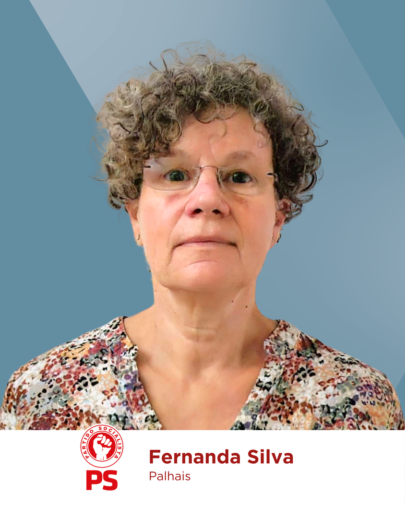
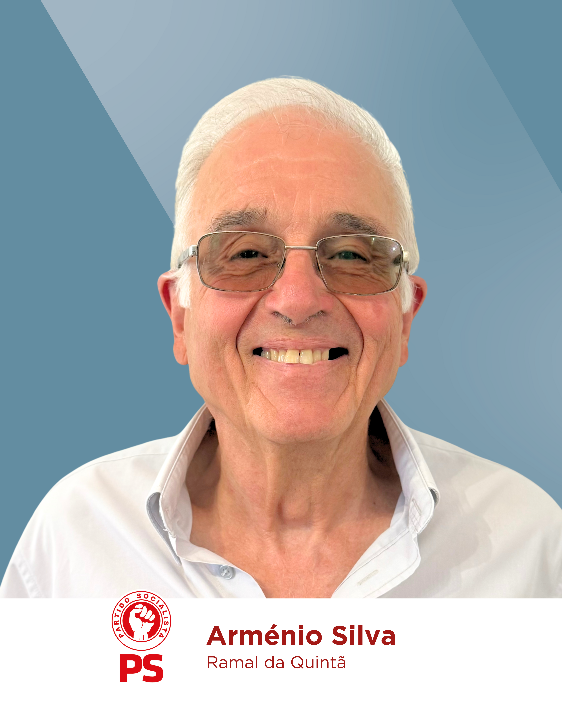
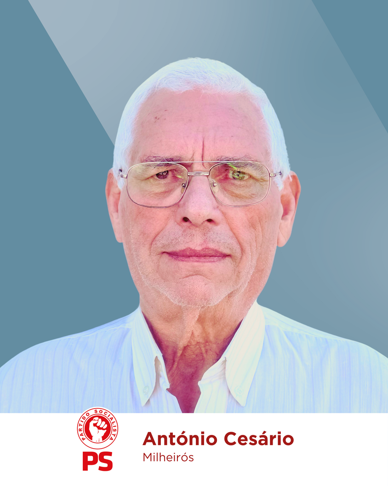
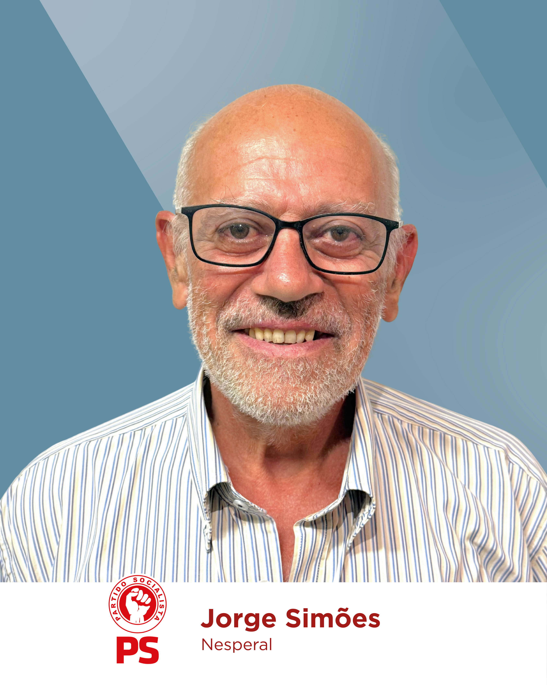
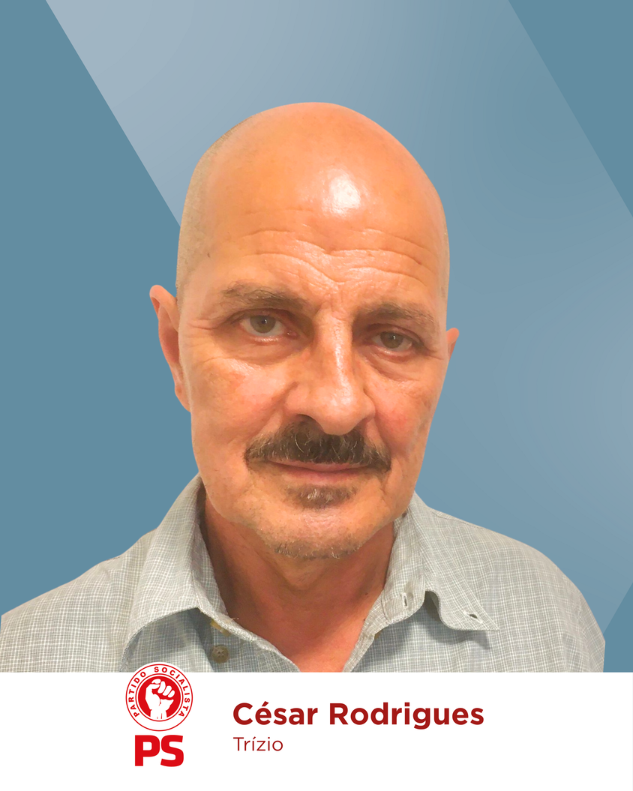
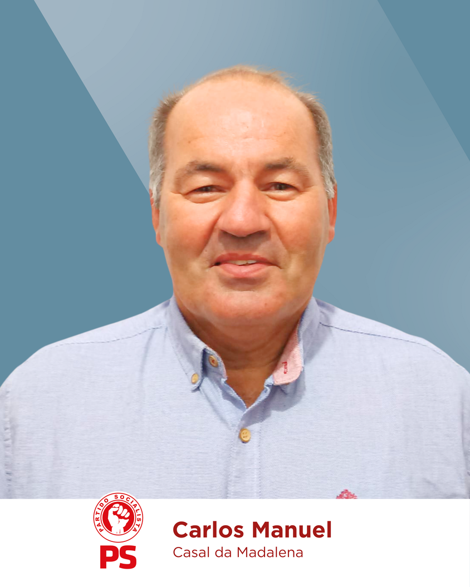

UNIÃO DE FREGUESIAS DE CERNACHE DO BONJARDIM, NESPERAL E PALHAIS
Chamo-me Célia Luís, tenho 52 anos e vivo no Salgueirinho em Cernache do Bonjardim. Vivi muitos anos em Lisboa e viajei por vários continentes, mas foi sempre aqui que me senti em casa.
Com o meu avô materno, Cesário Marçal Duarte - lagareiro, moageiro e figura incontornável da região - aprendi o cheiro da farinha acabada de moer, o gosto da "volta à freguesia", o sabor do azeite fresco a escorrer nas tulhas e a doçura dos favos de mel como sobremesa de verão. Mas eram as idas à ribeira os meus momentos favoritos.
Com a minha avó paterna, Nazaré Jacinta Antunes, aprendi o valor da entreajuda. Com a minha mãe, Maria da Conceição, descobri cedo o significado de "ir à terra". Essas raízes mantêm-nos firmes.
Sou licenciada em Organização e Gestão de Empresas pelo ISCTE-IUL e trabalhei em empresas como a Accenture e a NOS, onde ganhei experiência internacional, capacidade de análise e de negociação.
Há alguns anos, decidi mudar de vida e regressar definitivamente a Cernache do Bonjardim, dedicando-me à família, à agricultura e à valorização da nossa terra.
Sou mãe de quatro filhos e presidente da Associação de Pais do IVS, onde tenho procurado aproximar famílias e escolas.
O meu compromisso como candidata à Junta é continuar o trabalho da equipa que me acompanha e inovar com coragem: consolidar o que já foi feito, trazer novas ideias e estar próxima da população, valorizando todas a União de Freguesias.
Quero servir com transparência, proximidade, garantindo que todos se sintam representados e que o progresso caminhe lado a lado com o respeito pelas tradições e pelo bem-estar da população. É com essa determinação que assumo esta candidatura, com força para avançar.JUNTOS, temos Força para Avançar!






Programa
DESENVOLVIMENTO LOCAL E ECONOMIA
-
 Reivindicar junto do Município por: manutenção mais
assídua dos passeios e podas de árvores; pavimentação e
repavimentação de ruas em mau estado; pela requalificação
de calçadas existentes na vila, lugares e aldeias,
nomeadamente Tira e Porto dos Fusos; abastecimento de água
em agregados populacionais; lutar pelo alargamento da rede
de saneamento.
Reivindicar junto do Município por: manutenção mais
assídua dos passeios e podas de árvores; pavimentação e
repavimentação de ruas em mau estado; pela requalificação
de calçadas existentes na vila, lugares e aldeias,
nomeadamente Tira e Porto dos Fusos; abastecimento de água
em agregados populacionais; lutar pelo alargamento da rede
de saneamento.
-
Lutar pela beneficiação de mais estradões florestais e
limpezas mais regulares, com fiscalização exigente.
-
Exigir mais infraestruturas para peões em Palhais,
Nesperal e Cernache do Bonjardim.
-
Apoiar na dinamização do Mercado Municipal com a
valorização dos produtos locais, em parceria com a
APROSER.
-
Reestruturação do Jardim da Memória, com criação de uma
Área de Serviço para Autocaravanas (ASA) e replantação do
parque infantil.
-
Lutar pela criação das infraestruturas da Zona Industrial
e requalificação das existentes.
-
Continuar a construir, em conjunto com o Município, o
projeto “Centro de Apoio à Revitalização da Pesca
Artesanal – CARPA”, para a revitalização e requalificação
da aldeia de Várzea de Pedro Mouro.
-
Criação da zona de lazer do Poço Redondo, com trilho
pedestre homologado com trajeto Cernache do Bonjardim-Poço
Redondo-Brejo da Correia-Casal das Casas-Aldeia
Velha-Sambado, ao longo da Ribeira Cerdeira e criação de
outros percursos pedestres certificados.
-
Requalificação do parque infantil do jardim da
Memória.
-
Apoiar na dinamização do Smart Workplace e na atração de
empresas para o mesmo.
-
Reestruturação Paisagística do Parque Nª Sra. da
Conceição, junto ao Estádio D. Nuno Álvares Pereira, com
parque infantil, percursos de caminhada, equipamentos de
manutenção e zona de parque de merendas.
-
Monitorizar, em conjunto com o Município, a reorganização
de tráfego junto ao Centro Social São Nuno de Santa Maria,
com criação de parque de estacionamento para servir todo o
centro da vila e favorecer os comércios.
FLORESTA, RIO E AMBIENTE
-
Fomentar o alargamento dos programas “Aldeia Segura” e
“Pessoas Seguras” a mais aldeias.
-
Desenvolver novas respostas de gestão de sobrantes
agrícolas para apoio à população.
-
Sensibilizar para a gestão consciente da floresta
(espécies autóctones, impacto empresarial, divulgação de
apoios, workshops).
-
Trabalhar com a APA na revisão do Plano de Ordenamento da
Albufeira de Castelo de Bode, de forma a promover o
investimento privado ligado ao turismo, desportos
aquáticos e atividades de natureza.
-
Apoiar a associação de caçadores no controlo de
pragas.
EDUCAÇÃO, CULTURA E JUVENTUDE
-
Reforço da parceria com o Instituto Vaz Serra e
instituições escolares.
-
Assegurar a continuidade das atividades de suporte à
família.
-
Criação de um bolsa de emprego de verão para
jovens.
-
Valorizar Cernache do Bonjardim através da figura do
Construtivista, focando-se na sua vertente
histórico-religiosa e serviços culturais.
-
Apoiar as coletividades, associações culturais,
desportivas, recreativas e religiosas do concelho nas suas
atividades e na obtenção de melhorias das suas
infraestruturas.
-
Dar continuidade à dinamização da Agenda de Natal e
outras datas festivas.
AÇÃO SOCIAL, SAÚDE E COMUNIDADE
-
Apoio a idosos isolados e criação de respostas
ocupacionais à população sénior.
-
Responder de forma mais rápida e eficiente às
necessidades manifestadas pelos fregueses.
-
Modelo de Junta Aberta com atendimento regular nas
aldeias.
-
Promover aulas de saúde e programas de formação para quem
mais necessita.
-
Articular as necessidades identificadas na comunidade com
o funcionamento da Unidade de Saúde.
-
Reivindicar junto do Município e das entidades de saúde
responsáveis por melhores condições de acesso à saúde,
levando as preocupações da população quanto à falta de
médicos e pressionando para que haja soluções.